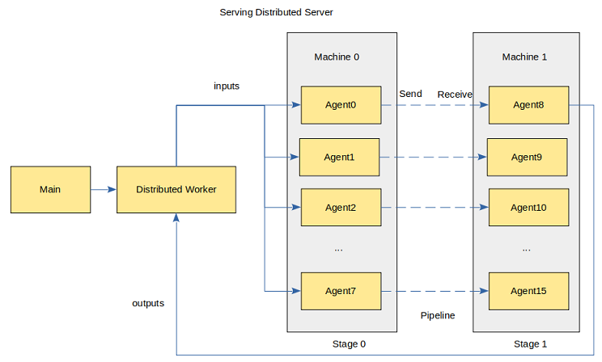

基于MindSpore Serving部署分布式推理服务

概述
分布式推理是指推理阶段采用多卡进行推理，针对超大规模神经网络模型参数个数过多、模型无法完全加载至单卡中进行推理的问题，可利用多卡进行分布式推理。本文介绍部署分布式推理服务的流程，与单卡推理服务部署流程大致相同，可以相互参考。
分布式推理服务的架构如图所示：

Main进程提供客户端访问的接口，管理Distributed Worker并进行任务管理与分发；Distributed Worker进程根据模型配置自动调度Agent完成分布式推理；每一个Agent进程包含一个分布式模型的切片，占用一个device，加载模型执行推理。
上图展示了rank_size为16，stage_size为2的场景，每个stage包含8个Agent，占用8个device。rank_size表示推理使用的device的个数，stage表示流水线的一段，stage_size表示流水线的段数。Distributed Worker向Agent发送推理请求并从Agent获取推理结果。Agent之间使用HCCL通信。
当前对分布式模型有以下限制：
第一个stage的模型接收相同的输入数据。
其他的stage的模型不接收数据。
最后一个stage的所有模型都返回相同的数据。
仅支持Ascend 910推理。
下面以一个简单的分布式网络MatMul为例，演示部署流程。
环境准备
运行示例前，需确保已经正确安装了MindSpore Serving，并配置了环境变量。MindSpore Serving安装和配置可以参考MindSpore Serving安装页面。
导出分布式模型
导出分布式模型需要的文件可以参考export_model目录，需要如下文件列表：
export_model
├── distributed_inference.py
├── export_model.sh
├── net.py
└── rank_table_8pcs.json
net.py为MatMul网络定义。distributed_inference.py配置分布式相关的参数。export_model.sh在当前机器上创建device目录并且导出每个device对应的模型文件。rank_table_8pcs.json为配置当前多卡环境的组网信息的json文件，可以参考rank_table。
使用net.py，构造一个包含MatMul、Neg算子的网络。
import numpy as np
from mindspore import Tensor, Parameter, ops
from mindspore.nn import Cell
class Net(Cell):
def __init__(self, matmul_size, transpose_a=False, transpose_b=False, strategy=None):
super().__init__()
matmul_np = np.full(matmul_size, 0.5, dtype=np.float32)
self.matmul_weight = Parameter(Tensor(matmul_np))
self.matmul = ops.MatMul(transpose_a=transpose_a, transpose_b=transpose_b)
self.neg = ops.Neg()
if strategy is not None:
self.matmul.shard(strategy)
def construct(self, inputs):
x = self.matmul(inputs, self.matmul_weight)
x = self.neg(x)
return x
使用distributed_inference.py， 配置分布式模型。可以参考分布式推理。
import numpy as np
from net import Net
from mindspore import context, Model, Tensor, export
from mindspore.communication import init
def test_inference():
"""distributed inference after distributed training"""
context.set_context(mode=context.GRAPH_MODE)
init(backend_name="hccl")
context.set_auto_parallel_context(full_batch=True, parallel_mode="semi_auto_parallel",
device_num=8, group_ckpt_save_file="./group_config.pb")
predict_data = create_predict_data()
network = Net(matmul_size=(96, 16))
model = Model(network)
model.infer_predict_layout(Tensor(predict_data))
export(model.predict_network, Tensor(predict_data), file_name="matmul", file_format="MINDIR")
def create_predict_data():
"""user-defined predict data"""
inputs_np = np.random.randn(128, 96).astype(np.float32)
return Tensor(inputs_np)
使用export_model.sh，导出分布式模型。执行成功后会在上一级目录创建model目录，结构如下：
model
├── device0
│ ├── group_config.pb
│ └── matmul.mindir
├── device1
├── device2
├── device3
├── device4
├── device5
├── device6
└── device7
每个device目录都包含两个文件group_config.pb和matmul.mindir，分别表示模型分组配置文件与模型文件。
部署分布式推理服务
启动分布式推理服务，可以参考matmul_distributed，需要如下文件列表：
matmul_distributed
├── serving_agent.py
├── serving_server.py
├── matmul
│ └── servable_config.py
├── model
└── rank_table_8pcs.json
model为存放模型文件的目录。serving_server.py为启动服务脚本，包括Main和Distributed Worker进程。serving_agent.py为启动Agent脚本。servable_config.py为模型配置文件，通过distributed.declare_servable声明了一个rank_size为8、stage_size为1的分布式模型，同时定义了一个分布式servable的方法predict。
模型配置文件内容如下：
from mindspore_serving.server import distributed
from mindspore_serving.server import register
model = distributed.declare_servable(rank_size=8, stage_size=1, with_batch_dim=False)
@register.register_method(output_names=["y"])
def predict(x):
y = register.add_stage(model, x, outputs_count=1)
return y
启动Serving服务器
使用serving_server.py，调用distributed.start_servable方法部署分布式Serving服务器。
import os
import sys
from mindspore_serving import server
from mindspore_serving.server import distributed
def start():
servable_dir = os.path.dirname(os.path.realpath(sys.argv[0]))
distributed.start_servable(servable_dir, "matmul",
rank_table_json_file="rank_table_8pcs.json",
version_number=1,
distributed_address="127.0.0.1:6200",
wait_agents_time_in_seconds=0)
server.start_grpc_server("127.0.0.1:5500")
server.start_restful_server("127.0.0.1:1500")
if __name__ == "__main__":
start()
servable_dir为servable存放的目录。servable_name为servable的名称，对应一个存放模型配置文件的目录。rank_table_json_file为配置当前多卡环境的组网信息的json文件。distributed_address为Distributed Worker的地址。wait_agents_time_in_seconds设置等待所有Agent注册完成的时限，默认为0表示会一直等待。
启动Agent
使用serving_agent.py，调用startup_agents方法会在当前机器上启动的8个Agent进程。Agent会从Distributed Worker获取rank_table，这样Agent之间才能利用HCCL进行通信。
from mindspore_serving.server import distributed
def start_agents():
"""Start all the agents in current machine"""
model_files = []
group_configs = []
for i in range(8):
model_files.append(f"model/device{i}/matmul.mindir")
group_configs.append(f"model/device{i}/group_config.pb")
distributed.startup_agents(distributed_address="127.0.0.1:6200", model_files=model_files,
group_config_files=group_configs, agent_start_port=7000,
agent_ip=None, rank_start=None)
if __name__ == '__main__':
start_agents()
distributed_address为Distributed Worker的地址。model_files为模型文件路径的列表。group_config_files为模型分组配置文件路径的列表。agent_start_port表示Agent占用的起始端口，默认为7000。agent_ip为Agent的ip地址，默认为None。Agent与Distributed Worker通信的ip默认会从rank_table获取，如果该ip地址不可用，则需要同时设置agent_ip与rank_start。rank_start为当前机器起始的rank_id，默认为None。
执行推理
通过gRPC访问推理服务，client需要指定gRPC服务器的网络地址。运行serving_client.py，调用matmul分布式模型的predict方法，执行推理。
import numpy as np
from mindspore_serving.client import Client
def run_matmul():
"""Run client of distributed matmul"""
client = Client("localhost:5500", "matmul", "predict")
instance = {"x": np.ones((128, 96), np.float32)}
result = client.infer(instance)
print("result:\n", result)
if __name__ == '__main__':
run_matmul()
执行后显示如下返回值，说明Serving分布式推理服务已正确执行MatMul网络的推理：
result:
[{'y': array([[-48., -48., -48., ..., -48., -48., -48.],
[-48., -48., -48., ..., -48., -48., -48.],
[-48., -48., -48., ..., -48., -48., -48.],
...,
[-48., -48., -48., ..., -48., -48., -48.],
[-48., -48., -48., ..., -48., -48., -48.],
[-48., -48., -48., ..., -48., -48., -48.]], dtype=float32)}]